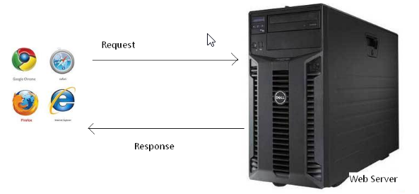
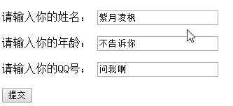
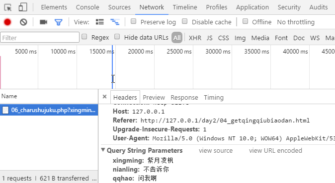

说到Ajax，不得不先提一下HTTP（HTTP，HyperText Transfer Protocol)协议，中文名：超文本传输协议，是互联网上应用最为广泛的一种网络协议。所有的WWW文件都必须遵守这个标准。设计HTTP最初的目的是为了提供一种发布和接收HTML页面的方法。一次HTTP请求，包含了两个重要的部分：上行request（请求）和下行response（响应）。

HTTP协议定义了很多与服务器交互的方法，最基本的有4种，分别是GET,POST,PUT,DELETE. 一个URL地址用于描述一个网络上的资源，而HTTP中的GET, POST, PUT,DELETE就对应着对这个资源的查，改，增，删4个操作。 我们最常见的（也是我们关心的）就是GET和POST了。GET一般用于获取/查询资源信息，而POST一般用于更新资源信息。
我们看看GET和POST的区别：
GET提交的数据会放在URL之后，以?分割URL和传输数据，参数之间以&相连，如EditPosts.aspx?name=test1&id=123456. POST方法是把提交的数据放在HTTP包的Body中.
GET提交的数据大小有限制（因为浏览器对URL的长度有限制，本身并没有限制），而POST方法提交的数据没有限制。
GET方式提交数据，会带来安全问题，比如一个登录页面，通过GET方式提交数据时，用户名和密码将出现在URL上，如果页面可以被缓存或者其他人可以访问这台机器，就可以从历史记录获得该用户的账号和密码。
如果你使用chrome浏览器的话，可以再下面的页面中看到这两种请求携带的信息:


通常，浏览器产生HTTP请求，是由于用户输入了新的网址、或者点击了超级链接，使页面跳转，这将导致页面的全局刷新。而Ajax（Asynchronous Javascript And XML：异步JavaScript和XML）技术，可以使网页悄悄地、偷偷地发起HTTP请求，请求回来的数据在页面局部刷新呈递。ajax的使用其实很简单：
第一步，new出一个XMLHttpRequest对象：
1 | var xhr = new XMLHttpRequest(); |
这里变量名xhr可以随便起，只是一般工程师都喜欢使用这个名字，就像var arr一样，姑且当做一种约定俗成的东西就好，方便大家交流。
第二步，处理服务器上面返回的响应：
1 | xhr.onreadystatechange = function() { |
其中，if语句小括号中的的语句：readyState表示返回XMLHTTP请求的当前状态，具体数值示意如下：
0 （未初始化）
对象已建立，但是尚未初始化（尚未调用open方法）
1 （初始化）
已调用send()方法，正在发送请求
2 （发送数据）
send方法调用完成，但是当前的状态及http头未知
3 （数据传送中）
已接收部分数据，因为响应及http头不全，这时通过responseBody和responseText获取部分数据会出现错误，
4 （完成）
数据接收完毕，此时可以通过通过responseBody和responseText获取完整的回应数据
第三步，创建一个请求，第一个参数是请求的类型get或者post，第二个参数就是请求的路径，第三个参数叫做是否使用异步机制：
1 | xhr.open("post", URL, true); |
如果是post请求，在发送请求前需要做以下处理（设置请求数据的格式，根据接口相应调整）：
1 | // 设置为表单请求，若是json："application/json"，常见的还有：multipart/form-data |
第四步，发送请求：
1 | xhr.send("name=xxx&age=18"); |
总结一下：
1 | // new出一个XMLHttpRequest对象： |
1.1 $.get()方法
1 | $.get("a.json" , {"id":1,"name":"考拉"} , function(text){ |
jQuery默默的帮我们：
1） encodingURIComponent中文了；
2） 如果请求是404等错误状态，不会执行回调函数；
3） jQuery识别传回来的东西像JSON，已经帮我们转JSON了，
jQuery中get方法还可以这样使用两个参数：
1 | $.get("a.json?id=1&name=枫", function(text){ |
1.2 $.post()方法
1 | $.post("a.json",{"id":1,"name":"枫"},function(data){ |
1.3 $.ajax()方法
配置信息非常多，写在json里面进行配置：
1 | $.ajax("b.json",{ |